如何让机器人识别你的桌面
本教程将引导你完成桌面图标模板配置的全流程。配置完成后，机械臂可通过模板匹配识别桌面页面、自动翻页查找目标 APP、精准点击图标启动应用。
环境要求
开始前，请确认以下条件已满足：
拍摄桌面截图
首先，让机械臂拍摄手机当前桌面的画面。确保手机已放在摄像头画面中，且屏幕已点亮。
POST /api/screenshot 截图，或通过机械臂 click 点击屏幕空白处唤醒亮屏。以下为本教程使用的实际桌面截图示例（3 个桌面页面）：
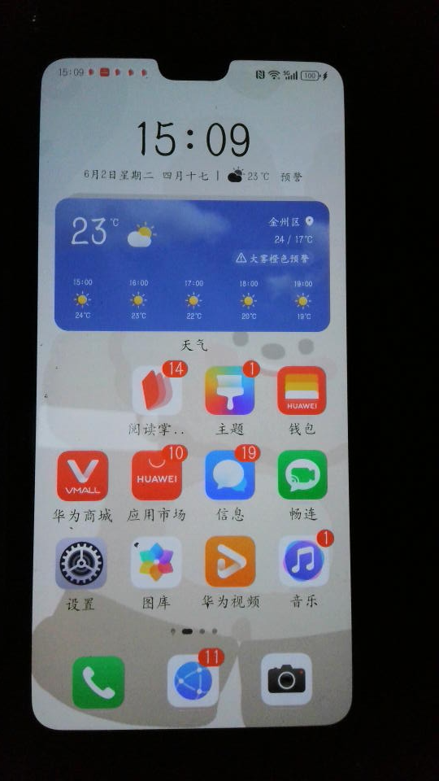
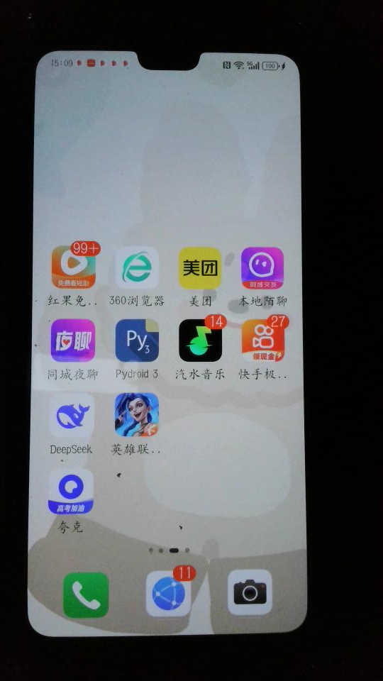
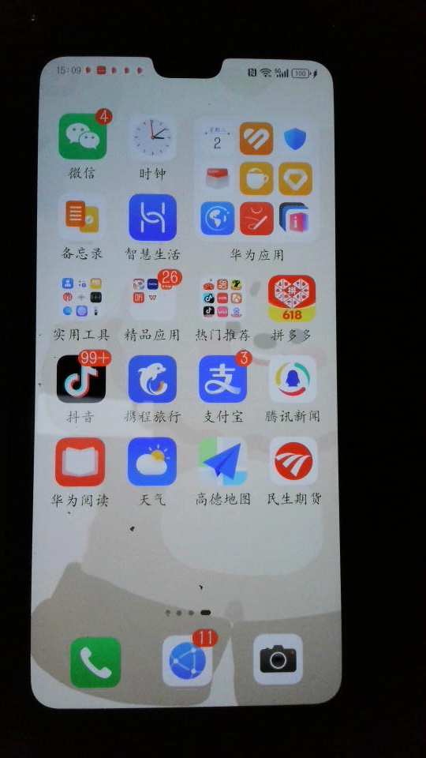
每张截图中，你可以清晰看到各个 APP 图标。这些图标就是我们要提取的模板图片。
裁剪图标模板
从截图中裁剪出每个 APP 的图标，保存为 PNG 文件放入 icons/ 目录。
- • PNG 格式，文件名小写英文 + 下划线，如
app_qishui.png - • 图标主体完整，边缘留 2-3px 空白（mask 模式需要边缘判断背景）
- • 不要包含动态内容（通知角标、倒计时、动画等）
- • 大小适中，通常 60x60 ~ 120x120 像素即可
以下是当前 icons/ 目录中已配置的桌面图标模板：
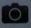
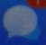
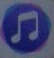
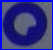
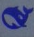
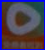
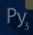
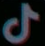
编写桌面配置文件
桌面配置文件的固定路径是 scripts/configs/app_desktop.yaml。它定义了手机桌面的所有可识别页面。
| 字段 | 说明 |
|---|---|
| app_name | 桌面名称（字符串，任意命名） |
| pages | 页面列表，每个页面包含以下字段 |
| name | 页面名称，如 desktop_page0、desktop_page1 |
| min_match | 最少需要匹配的特征数（达到此数即通过该页面检测） |
| must_features | 必选特征列表——全部必须匹配，否则跳过该页面 |
| features | 可选特征列表——匹配数 ≥ min_match 即通过 |
| type | 特征类型：image（模板匹配）或 text（OCR） |
| path | 图标模板路径（type: image 时使用） |
| mask | false=4角背景采样（宽松），true=严格模板匹配 |
app_name: 手机桌面 pages: # 第 1 页：电话、相机、短信、设置、音乐 - name: desktop_page0 min_match: 2 must_features: - name: 电话 type: image path: icons/app_phone.png mask: false - name: 照相机 type: image path: icons/app_camera.png mask: false features: - name: 短信 type: image path: icons/app_message.png mask: false - name: 设置 type: image path: icons/app_settings.png mask: false - name: 音乐 type: image path: icons/app_music.png mask: false # 第 2 页：电话、相机 + 更多 APP - name: desktop_page1 min_match: 3 must_features: - name: 电话 type: image path: icons/app_phone.png mask: false - name: 照相机 type: image path: icons/app_camera.png mask: false features: - name: 汽水音乐 type: image path: icons/app_qishui.png mask: false - name: 夸克 type: image path: icons/app_quark.png mask: false # 任务卡页面（多任务切换视图） - name: 任务卡 min_match: 0 must_features: - name: 小窗显示 type: image path: icons/task_show.png mask: false - name: 垃圾箱 type: image path: icons/task_delete.png mask: false features: []
检测原理详解
当程序执行 detect_desktop 时，内部按以下流程工作：
Step 1：摄像头捕获当前手机屏幕画面（旋转 90° 适配竖屏）
Step 2：遍历配置文件中定义的每个页面（page0 → page1 → page2 → 任务卡）
Step 3：对每个页面，先检测 must_features（必须全部匹配）。若有不匹配的，跳过该页面
Step 4：必须特征通过后，检测 features，统计匹配数量
Step 5：匹配数量 ≥ min_match 时，认定当前屏幕属于该页面
OpenCV 使用 cv2.matchTemplate() 在画面中搜索与图标模板最相似的区域。返回最高相似度得分（score）及其位置。默认阈值 0.75，得分超过此值即认为匹配成功。
mask: false 时，程序会采样模板图 4 个角点的颜色作为背景色，搜索时忽略这些背景像素。这能容忍图标大小/位置的微小变化。建议桌面图标统一使用 mask: false。翻页逻辑
配置好桌面后，机械臂可通过以下 API 在页面间自动导航：
| API | 方法 | 说明 |
|---|---|---|
| POST /api/go_home | POST | 返回桌面：检测当前是否在桌面，不在则循环上滑直到回到桌面 |
| POST /api/go_forward | POST | 向右翻页（左滑手势），从当前页面切换到下一页 |
| POST /api/go_back | POST | 向左翻页（右滑手势），从当前页面切换到上一页 |
| POST /api/run_app | GET/POST | 智能启动 APP：go_home → 检测页面 → 自动翻页找到目标页 → 点击图标 |
POST /api/run_app {"app_name": "汽水音乐"} 的执行流程：
1. go_home 确保回到桌面
2. 检测当前页面，判断与目标页面（汽水音乐所在的 page）的距离
3. 自动执行 go_forward 或 go_back 翻页，直到到达目标页面
4. 在目标页面上用模板匹配找到图标并点击
5. 最多循环 20 次保护，3 次点击尝试
app_desktop.yaml 中页面的 数字顺序。确保页面命名为 desktop_page0、desktop_page1、desktop_page2 等格式，程序会按数字自动排序。测试与验证
配置完成后，通过以下 API 验证桌面识别是否正常工作：
# 检测当前是否在桌面，返回页面名称和置信度 POST /api/detect_desktop # 返回: {"ok":true,"data":{"page_name":"desktop_page1","score":0.94,"matched":true}}
# 让机械臂自动找到并点击"汽水音乐"图标 POST /api/run_app {"app_name": "汽水音乐"} # 返回: {"ok":true,"data":{"launched":true}}
# 在当前画面中搜索"夸克"图标 POST /api/find_template {"path": "icons/app_quark.png", "threshold": 0.75} # 返回: {"ok":true,"data":{"x":242,"y":516,"w":55,"h":55,"score":0.92}}
mask: false；3) 指定 roi 缩小搜索区域；4) 检查模板图片是否与画面中的图标一致。常见问题
最常见的原因是模板图片质量不佳。检查以下几点：1) 模板是否只包含图标本体，没有多余背景；2) 图标是否与画面中的图标大小接近；3) 尝试设置 mask: false 使用 4 角背景采样；4) 降低 threshold 阈值；5) 摄像头对焦是否清晰（调整 /api/change_focus）。
1) 确认 must_features 中的图标在画面中确实存在；2) 降低 must_features 的图标匹配难度（mask: false + 降低 threshold）；3) 增加 features 中的图标数量作为备选；4) 调整 min_match 降低门槛。
确认目标 APP 的图标已正确配置在 app_desktop.yaml 的某个页面中，且 name 字段与 API 调用时传入的 app_name 完全一致。同时确认图标模板文件存在于 icons/ 目录。
mask: true（默认）使用严格模板匹配，图标模板的每个像素都会参与匹配计算。适合固定 UI 元素（按钮、文字等）。
mask: false 会采样模板图 4 个角的颜色作为背景色，匹配时忽略这些背景区域。这能容忍图标在不同背景色上的显示差异。桌面图标建议使用 mask: false。
1) 截图手机桌面，找到目标 APP 图标；2) 裁剪图标保存为 icons/app_xxx.png；3) 在 app_desktop.yaml 对应页面的 features 中添加新条目；4) 测试 POST /api/find_template 确认可找到；5) 测试 POST /api/run_app 确认可启动。